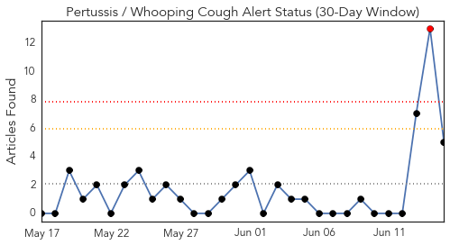
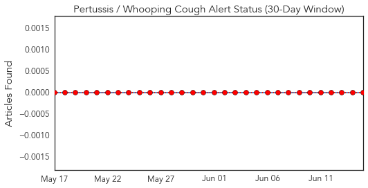
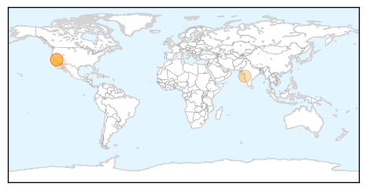

Pertussis
30-Day Web Trend
1 alerts, 0 warnings

30-Day Twitter Trend
0 alerts, 0 warnings

Article Locations
Article Confidences

Top Articles:
Top Tweets:
-
No tweets found for Jun 15, 2014
Dengue Fever
30-Day Web Trend
1 alerts, 0 warnings

30-Day Twitter Trend
0 alerts, 0 warnings

Article Locations

Article Confidences

Top Articles:
- 0.992
- The Threat to Australia: The Rise Of Zika Virus
- 0.924
- Researchers want Wolbachia-infected mosquitoes unleashed on Townsville in bid to eradicate dengue fever
- 0.909
- Dong Thap, Vinh Long mark ASEAN Dengue Day
- 0.859
- Vaccine against dengue close
- 0.764
- Dengue vaccine ready by 2015, Asean told
- 0.574
- Over 500 hit in dengue 'mega cluster' , Others news, Health News, AsiaOne YourHealth
Top Tweets:
-
No tweets found for Jun 15, 2014